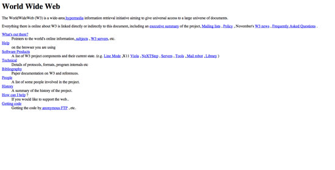

История создания сайтов берет свое начало с 90-х годов прошлого столетия и тесно связана с возникновением сети Интернет. Первопроходцем в этой сфере был женевский ученый из Европейской лаборатории элементарных частиц Тим Бернерс-Ли. Именно он является создателем первого в мире сайта. Но еще до него в далеких сороковых годах прошлого столетия Ваннервар Буш развивал идею о том, что благодаря специальным техническим устройствам можно расширить человеческую память и проиндексировать накопленную веками информацию.
Перывый сайт
Это давало бы возможность, по его мнению, организовать быстрый поиск необходимой информации. Именно такой принцип и лежит в основе сегодняшних сайтов. Сведения о дате создания первого сайта в литературных источниках разнятся. Одни исследователи утверждают, что это произошло в 1990 году, другие же датируют это событие 6 августа 1991 года. Тем не менее, факт остается фактом. На этом сайте было размещено описание разработанной Бернерсом-Ли технологии WWW (World Wide Web), базирующейся на протоколе передачи данных HTTP, системе адресации URL и разметке гипертекста HTML. Помимо этого на сайте находился ряд ссылок на другие сайты, то есть фактически он представлял собой первый Интернет-каталог в мире. Здесь же была изложена подробная информация о том, как работают браузеры и серверы и как их необходимо устанавливать.
Для разработки сайта Бернерс-Ли подготовил все необходимые инструменты заранее: гипертекстовый браузер с функционалом веб-редактора, веб-страницы и сервер на базе NeXTcube. Сегодня Тим Бернерс-Ли стоит во главе основанного им Консорциума Всемирной паутины (World Wide Web Consortium), занимающегося разработкой и внедрением стандартов Всемирной сети. В середине 90-х разработка сайтов стала одним из наиболее динамично развивающихся отраслей в мире. Если в 1995 году компаний, занимающихся веб-разработкой, насчитывалось менее 1000 тысячи, то спустя десятилетие (10 лет) только в Соединенных Штатах Америки их было уже более 30 000 тысяч.
0